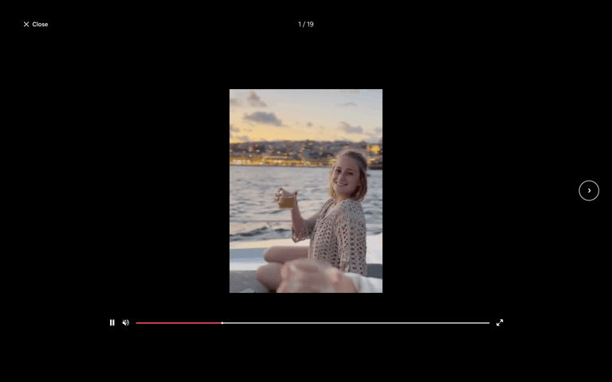

Company Story / lightbox decision
네. 클릭해서 읽는 확대 뷰어가 맞습니다.
인포그래픽은 썸네일이 아니라 읽는 콘텐츠입니다. 페이지 안의 캐러셀은 맥락을 보여 주는 미리보기로 두고, 탭하면 현재 장부터 여는 전용 뷰어로 전환합니다.
추천 결정: 회사 상세와 펄스에서 같은 “스토리 뷰어”를 열되, 원본 이미지는 어떤 단계에서도 자르지 않습니다. 확대는 크롭의 대안이 아니라, 작은 화면에서 읽기 편하게 만드는 두 번째 읽기 모드입니다.
현재 상태

작은 인라인 프레임에는 제목·도표가 빽빽한 장을 충분히 읽기 어렵습니다. 여기서는 “다음 장이 있다”는 감각만 주고, 읽기는 확대 뷰어에 맡기는 편이 자연스럽습니다.
권장 동작
1
인라인에서는 ‘확대해서 보기’가 분명해야 합니다
이미지 전체를 클릭 가능하게 하고, 하단에 확대해서 보기와 ⤢ 아이콘을 둡니다. 스와이프는 장 이동, 탭은 확대라는 역할을 분리해 오작동을 줄입니다.
2
확대는 전체 화면에 가까운 읽기 뷰어입니다
페이지 위에 팝업을 띄우되, 이미지 비율은 유지하고 object-contain으로 전체를 보입니다. 배경은 과한 다크모드가 아니라, 원본을 돋보이게 하는 반투명 차콜 또는 이미지 색을 아주 옅게 확장한 배경이 적절합니다.
3
모바일과 데스크톱의 조작만 다르게 합니다
모바일은 손가락 스와이프와 하단 진행 표시, 데스크톱은 좌우 키·큰 화살표·Escape를 제공합니다. 양쪽 모두 X 닫기와 “7 / 8” 위치 표시는 고정합니다.
┌───────────────────────────────────────┐ │ × 아메리칸 익스프레스 · 돈 버는 구조 │ │ 07 / 08 │ │ │ │ [ 원본 전체 이미지 ] │ │ object-contain │ │ │ │ ← → │ │ │ │ ● ● ● ● ● ● ● ○ │ └───────────────────────────────────────┘
왜 이 패턴인가
Lazyweb에서 확인한 Airbnb의 전체 화면 이미지 뷰어는 닫기, 현재 위치, 전용 미디어 공간을 분리합니다. KRW.O에서는 영상 조작 대신 “이전/다음 장”과 진행 표시만 남기면 됩니다. 사진 앱의 문법은 가져오되, 금융 리서치의 차분한 톤은 유지하는 방식입니다.
- 페이지 맥락을 잃지 않고 자세히 읽을 수 있습니다.
- 작은 인라인 카드의 높이를 무리하게 키우지 않습니다.
- 회사 페이지와 펄스가 같은 콘텐츠·같은 뷰어를 재사용합니다.

Airbnb — 닫기·위치 표시가 있는 전체 화면 이미지 뷰어. [Lazyweb]
세부 규칙
| 상황 | 규칙 |
|---|---|
| 회사 상세 인라인 | 2:3 공통 캔버스, 전체 이미지 contain, 하단 “확대해서 보기”. |
| 펄스 피드 | 첫 장을 미리 보여 주고, 탭하면 현재 장부터 동일한 뷰어를 엽니다. 피드에서만 다른 크롭 규칙을 만들지 않습니다. |
| 데스크톱 뷰어 | 이미지는 최대 88dvh 안에서 비율 유지. 카드보다 큰 이미지는 축소만 하고 절대 자르지 않습니다. 좌우 버튼은 이미지 밖에 배치합니다. |
| 모바일 뷰어 | 화면 안전영역을 제외한 높이에서 contain. 스와이프, 상단 X, 하단 진행 점. 브라우저 뒤로 가기 시 닫기. |
| 접근성 | <dialog> 또는 접근성 있는 모달로 포커스 고정, Escape 닫기, 이미지별 대체 텍스트, 화살표 버튼 라벨을 제공합니다. |
구현 순서
- 공통 StoryViewer를 만들고
slides와initialSlideIndex를 받습니다. - 기존 캐러셀의 이미지를 누르면 해당 인덱스로 StoryViewer를 엽니다.
- 회사 상세·펄스가 같은 컴포넌트를 호출합니다.
- 이미지는 여전히
contain으로 바꾸고, 화살표를 이미지 바깥으로 옮깁니다. story_viewer_open,slide_view,story_viewer_complete이벤트를 기록해 실제로 읽히는지 검증합니다.
유지할 점
- 현재의 세로형, 한 장씩 넘기는 서사는 개인투자자가 내용을 따라가기에 좋습니다.
- 회사 상세 안에 시리즈가 바로 보이는 구조도 유지합니다. 팝업은 상세 페이지를 대체하지 않습니다.
- 작품 같은 그림 톤을 유지하되, 조작 UI만 절제해 별도 다크 서비스처럼 보이지 않게 합니다.